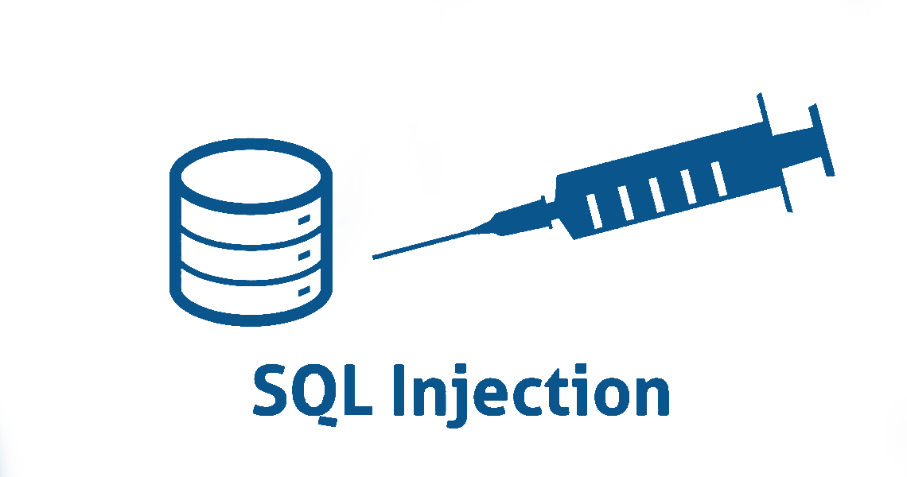
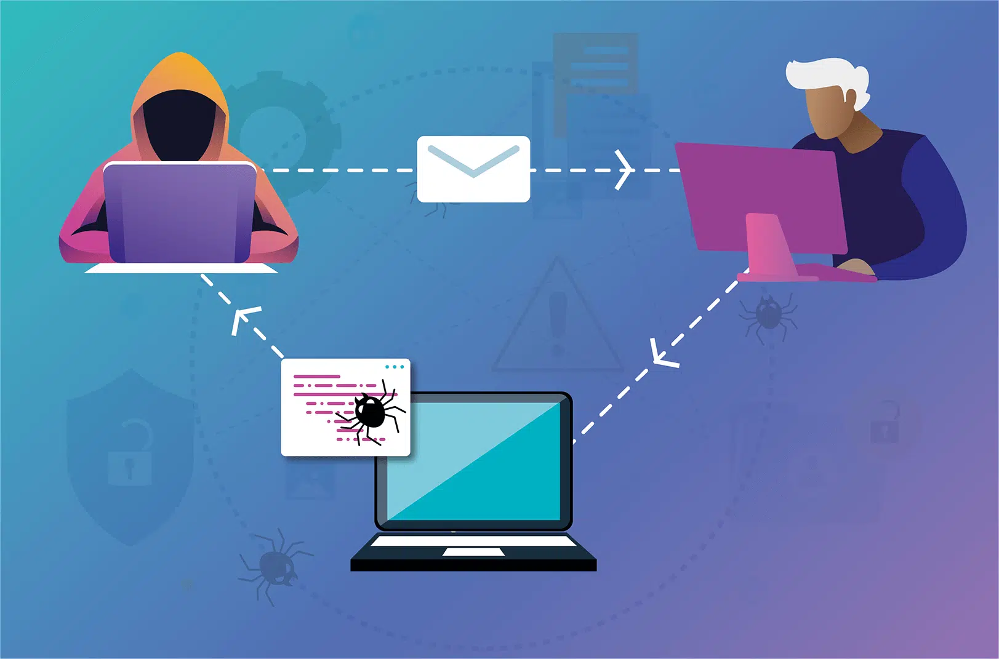
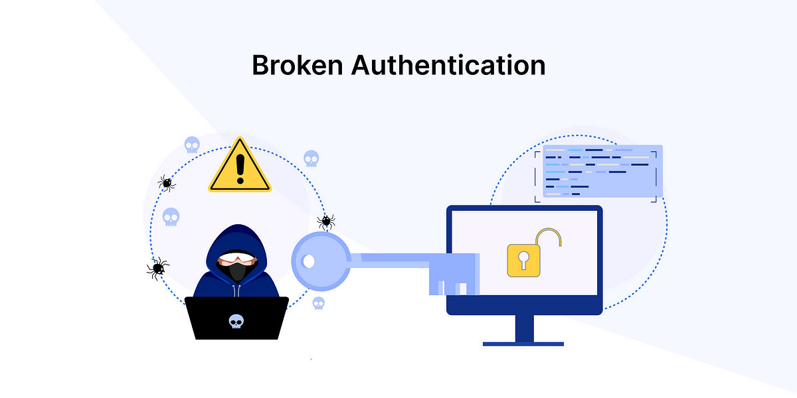
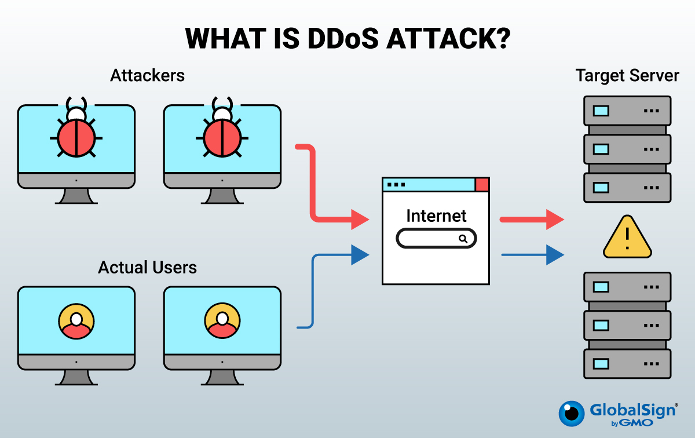
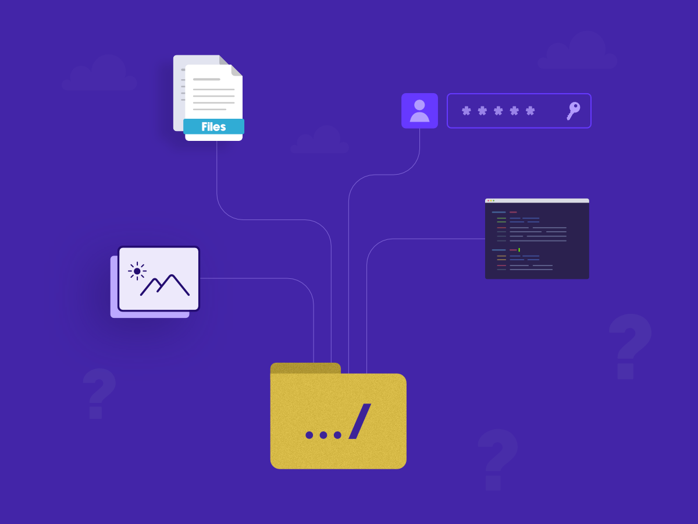

SQL Injection

|
SQL Injection is a type of attack where malicious SQL queries are injected into input fields to manipulate databases. It can lead to data leaks or unauthorized access.
Learn more: Tripwire
Source: Security Tutorials
|
Cross-Site Scripting (XSS)

|
XSS allows attackers to inject malicious scripts into web pages viewed by other users. It can steal sensitive information or perform actions on behalf of the victim.
Learn more: Website Security Store
Source: Website Security Store
|
Broken Authentication

|
This type of web attack can be executed in many ways: Brute force, Credential stuffing, Dictionary attacks, And more. Usually preventable with strong passwords and/or MFA
Learn more: What is broken Authentication
Source: Auth0 by Okta
|
Drive-By Download
|
Drive-by downloads occur when a user visits a website and a malicious agent downloads onto the victim's computer automatically. It can happen when the user is downloading something else or upon opening an email, clicking a pop-up window, or merely visiting a page.
Learn more: What is a Drive by Download
Source: Kaspersky
|
Fuzzing
|
Works by initially inputting a large amount of random data (fuzz) into an application to get it to crash. The next step is using a fuzzer software tool to identify the weak spots. If there are any loopholes in the target's security, the attacker can further exploit it.
Learn more: Fuzzing
Source: OWASP Community
|
Distributed Denial-of-Service(DDoS)

|
The aim of DDoS attacks is to overwhelm the target's web server with requests, making the site unavailable for other visitors. A botnet usually creates a vast number of requests, which are distributed among previously infected computers.XSS allows attackers to inject malicious scripts into web pages viewed by other users. It can steal sensitive information or perform actions on behalf of the victim.
Learn more: What is a DDoS Attack
Source: IBM website
|
Man-in-the-Middle (MitM)

|
Common among sites that haven't encrypted their data as it travels from the user to the servers (sites using HTTP instead of HTTPS). The perpetrator intercepts the data as it's being transferred between two parties.
Learn more: Man-in-the-Middle Attack: Types and Examples
Source: FORTINET Glossary
|
Directory Traversal

|
This attack targets the web root folder to access unauthorized files or directories outside the targeted folder. The attacker tries to inject movement patterns within the server directory to move up in the hierarchy.
Learn more: What is a Directory Traversal attack?
Source: Acunetix Web Security Blog
|
Phishing
|
Uses email, SMS, phone, social media, and social engineering techniques to entice a victim to share sensitive information — such as passwords or account numbers.
Learn more: Learn about Phishing attacks
Source: Australian Signals Directorate
|
|
Spoofing
|
A technique through which a cybercriminal disguises themselves as a known or trusted source.
Learn more: What is a spoofing attack?
Source: Malwarebytes
|